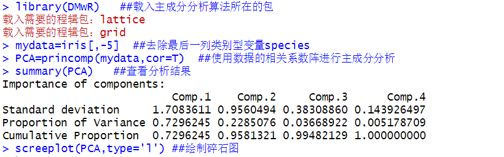
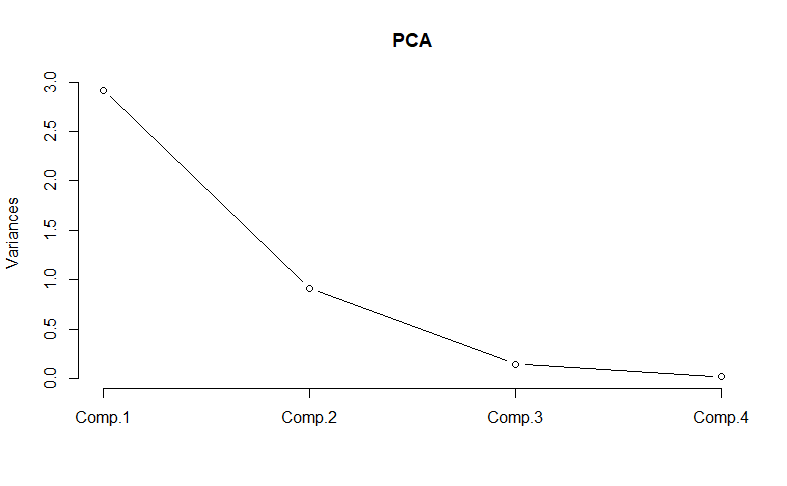

数据规约
以下将以R语言中耳熟能详的鸢尾花数据集作为演示数据源，该数据集共150个样本，包括Sepal.Length(花萼长度)、 Sepal.Width(花萼宽度)、Petal.Length(花瓣长度)、Petal.Width(花瓣宽度)以及Species(花的种类)这五个变量，其中花的种类分为三种：setosa(山鸢尾)、versicolor(变色鸢尾)、virginica(维吉尼亚鸢尾).
(1) 主成分分析
使用主成分分析对原数据进行降维处理，运行结果如下：


输出结果的前三行分别代表的是：主成分的标准差、方差贡献率、累计方差贡献率。从累计方差贡献率这一行来看，前两个主成分的累计方差贡献率达到了95.81%，即前两个主成分即可对原四个变量的95.81%进行概括。
根据主成分的累计方差贡献率应大于80%的原则，我们可以确定主成分的个数为2个。
同样，上述的分析还可以从碎石图中得到相同的解释。它将各个主成分的方差以点呈现，以线相连，直观地展现了主成分的方差是依次减小的。此外，当确定主成分的个数时，应该尽量选择方差数值较大的点。若前一主成分的方差值与后一主成分的方差值相差不大，则应根据实际情况进行选取(一般主成分的个数应少于原变量的个数)
当确定主成分的个数后，则需对各个主成分所代表的含义进行解释。即了解各个主成分对原各个变量的解释程度，进而得到主成分的表达式。运行的结果如下：
由于我们刚刚确定的主成分个数为2，则只需要看第一主成分与第二主成分的载荷值。从输出结果可知，第一主成分在Sepal.Length、Petal.Length、Petal.Width这三个变量上的载荷较大，即第一主成分更倾向于解释花瓣的特性；第二主成分在Sepal.Width变量的载荷较大，而在Petal变量上的载荷皆为0，即第二主成分更倾向于解释花萼的特性。
由此，得到主成分的表达式如下：

综上，通过主成分分析，原始数据从四维降至二维，从而大幅减少了数据挖掘的时间。
(2) 决策树归纳
决策树是一种预测模型，它代表的是对象属性和对象值的一种映射关系。而在R中创建决策树的包有很多，例如rpart包(分类与回归树)、party(条件推断树).这里先简要介绍一下条件推断树的工作原理：
在条件推断决策树中，它会根据条件分布测量变量与响应值（分类）之间的相关关系，选择分割节点中要使用的变量。此外，条件推断决策树中也会充分考虑决策树中重复分割节点时发生的多重假设检验问题，并在适当的时间点停止节点分割。（多重比较问题指的是向多个对象同时统计推论时，置信区间不包含真值或错误否定零假设，这种现象发生的可能性变得很大。比如，为了判断是否分割节点，执行拥有95%置信度的假设检验。使用该检验分割3次节点时，置信度为95%*95%*95%=85.7%。因此，进行多重比较时，若不作适当修正，则置信度就会降低，置信区间与假设检验就不正确。）
以鸢尾花数据集为演示示例，将Species作为响应值，其余四个变量为测量变量，对该数据集应用条件推断树ctree()，其运行结果如下：
从输出的结果来看，上述决策树清晰地展现了每一步节点决策的过程及叶节点的分类结果。首先，以花瓣的长度是否大于1.9进行划分，结果有50个setosa样本落入花瓣长度小于1.9的类别中；其次，在花瓣长度大于1.9的类别中，又对花瓣的宽度是否大于1.7进行划分，结果有46个virginica样本落入花瓣宽度大于1.7的类别中；最后，在花瓣宽度大于1.7的类别中，再以花瓣的长度是否大于4.8进行划分，结果为有46个versicolor样本落入花瓣长度小于4.8的类别中，4个versicolor样本和4个virginica样本落入花瓣长度大于4.8的类别中。
由于图形尺寸限制，结果中的分类展示的不够完全，可以通过levels(iris$Species)命令来查看。总体来看，我们可知：setosa的主要特征为花瓣长度小于1.9；versicolor的主要特征为花瓣长度在1.9～4.8之间，花瓣宽度大于1.7；而virginica的主要特征为花瓣的长度大于1.9，花瓣的宽度大于1.7。综上分析可得setosa属于较小型花，而virginica属于较大型花。
(3) 直方图
以DMwR程序包中iris（鸢尾花）数据集作为演示示例，对数据集中数值型变量Sepal.Width（萼片宽度）应用hist()函数绘制直方图进行数值规约展示，其运行结果如下：
上述代码将鸢尾花的萼片宽度按照等距原则划分为12组，输出结果中的“breaks”即表明划分的具体情况，可以看出划分以0.2为组距，“counts”为每个组中的数据个数。从直方图来看，鸢尾花的萼片的宽度大致呈对称分布。
(4) 简单随机抽样
以DMwR程序包中iris（鸢尾花）数据集作为演示示例，从150个样本中不重置地随机抽取5个数值，并提取该数值对应的样本数据，其运行结果如下：
(5) 分层抽样
以DMwR程序包中iris（鸢尾花）数据集作为演示示例，将分类变量Species为分层变量，采用不重置简单随机抽样的方式从每个层中抽取3个样本，其运行结果如下：